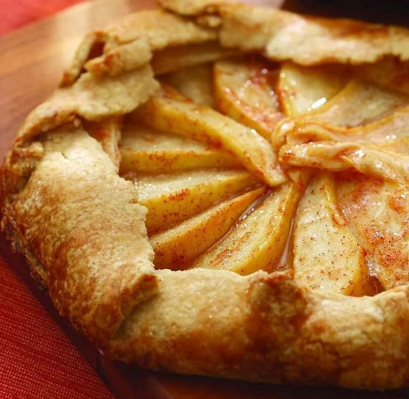

Rustic Pear Tart

Ingredients
- 1 large ripe but firm pear, peeled and thinly sliced
- 1 teaspoon plus ⅓ cup all-purpose flour, divided, plus additional for dusting
- 2 tablespoons sugar, divided
- ¼ teaspoon ground cinnamon
- ⅛ teaspoon grated nutmeg
- ⅛ teaspoon salt
- ⅓ cup whole-wheat pastry flour
- 1 tablespoon cold unsalted butter
- 2 tablespoons walnut oil, or canola oil
- 1-2 tablespoons cold water
Instructions
- Preheat oven to 375°F.
- Toss pear slices, 1 teaspoon all-purpose flour, 1 tablespoon sugar, cinnamon, nutmeg and salt in a medium bowl.
- Whisk ⅓ cup all-purpose flour, whole-wheat flour and the remaining 1 tablespoon sugar in a medium bowl. Cut in butter with a pastry cutter or a fork until the mixture resembles coarse meal. Sprinkle oil over the mixture and stir with a fork until evenly combined. Add 1 tablespoon water and stir until the dough just stays together when pressed with a fork; add up to 1 additional tablespoon of water if the dough seems too dry.
- Line a work surface with parchment paper or a silicone baking mat, generously dust with flour and turn the dough out onto it. Form the dough into a small patty, dust the top with flour and roll into a rustic 10-inch circle, adding more flour if necessary to prevent sticking. Transfer the crust to a baking sheet with parchment paper or baking mat in place.
- Lay the pear slices in decorative, overlapping circles on top of the crust, leaving a 1-inch border around the edge. Spoon any remaining pear juice over the slices. Pick up the edges of the crust using a spatula and fold over the pears. The crust will not meet in the center.
- Bake the tart until lightly browned and bubbling, about 40 minutes. Cool for 10 minutes before serving.
Notes
- (The original page also had grocery-store ads mixed into the ingredient list; those were left out.)